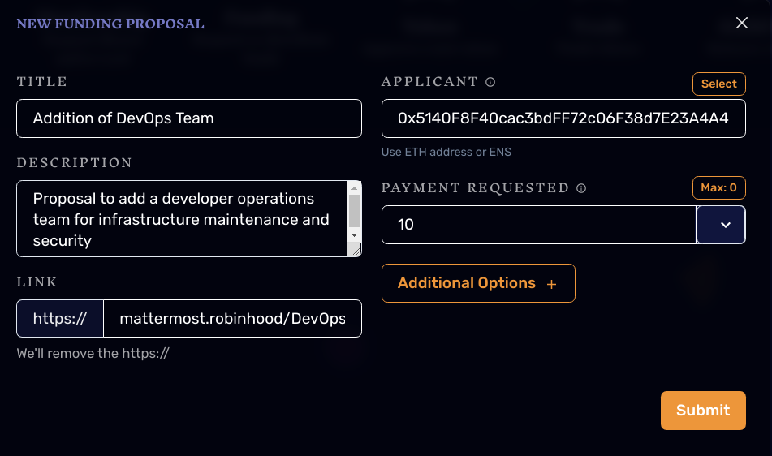

In any organization, decisions must be made. In RHC as a DAO, these decisions will be made by the members of the cooperative using the **DAO Governance System*. Though built using Moloch, this protocol is also inspired by the Index Coop’s IIP Contribution Process.
Members and non-members alike have the right to use the Governance System to make proposals for governance including but not limited to:
Each member of the co-op posesses one vote (more on this in next section), and for any given proposal, the lifecycle of the proposal can be visualized as:

The first step in this process entails drafting a preliminary DAO Governance Proposal, or DGP, to be used as a starting point for informal discussion, during which, peers can help you develop the best possible version of your proposal into a final draft. Specifically, this best version is one that is aligned with the interests of the coop as a whole, is logically sound and consistent,* clearly explains the proposed action, and details the necessary funding and commitment required. The proposal drafting procedure can be described through the following steps:
We can’t expect ourselves to create great proposals on the first try, democractic governance isn’t a trivial process! The first Pull Request you submit is intended to be a rough draft that other members can use to help you evaluate the clarity and strength of your proposal before putting it into a final draft.
As soon as your PR is reviewed and accepted, Tuck will open up a new channel on Mattermost and send a copy of your draft to create a space for discussion around your proposal. The purpose of this stage is for you to be able to gain insight into the value of your proposal by engaging with members of the community before submitting a formal proposal. The main questions that you should be asking are things like;
Once you believe you’ve been able to develop your proposal into the best possible version, update it in the forked repository from step 1.1 and submit another Pull Request! This will prompt Tuck to send the final draft in your proposals mattermost channel and your proposal will proceed to the Debate And Smart-Contract Based Voting Phase.
In order to create a real-time experience where we can share ideas, criticisms, and praise for the proposal in question, we will have a Governance Call to spend some time debating and helping eachother reach an educated position on the proposal, followed by the utilization smart-contract based voting to ensure transparent and auditable results.
After you’ve submitted your final draft, the next step entails visiting DaoHaus and submitting a proposal to the DAO smart-contract. From the DAO Home Page you should be able to access the proposal tab on the left.
You should then be prompted to choose a proposal type and submit a proposal!
Its important to always make sure that you include the url for the mattermost channel Tuck created in the link field: 
Anyone can submit a proposal to the DAO, whether it is a current member, prospective member, or grant applicant, but in order for the DAO to actually vote on it, it must first be sponsored by a current member. You can sponsor your own proposal, or a proposal belonging to someone else if you support it. Sponsoring a proposal requires a 5 DAI Deposit, 4 DAI of which is returned after the proposal is processed, regardless of the outcome. The remaining 1 DAI is reserved to incentivize processing the proposal once it is ready.

After your proposal has been sponsored, a 5-day voting period will begin, and users will have 5 days to submit their vote. As soon as your proposal is sponsored, Tuck will announce it to the coop and send a link for members to use to schedule the Governance Call. 36 hours after Tuck’s announcement, Tuck will schedule a call for the soonest available time in which the greatest amount of members are available and announce it to the coop. Tuck will then send a reminder 1 hour before the meeting and a jitsi link when the meeting begins.
During the 5-day voting period, members have the right to vote on the proposal through DaoHaus. You can access the proposals by clicking the ‘view proposals’ button in the DAO Home Page.

You are only allowed to vote once on a proposal, so it’s advised you wait until after the governance call to beable to hear everyone’s arguments.
In order to protect members from 51% attacks and from supporting proposals they vehemently oppose, there will be a ‘rage-quit’ feature. At the end of the voting period, a 3-day grace period begins before implementation of the proposal. The purpose of the grace period is to allow members to rage quit before the changes from the proposal are implemented. During this period members who voted No have the opportunity to exit the co-op and collect their proportional share of tokens from the coop bank. If a proposal fails, members who voted Yes have the oportunity to exit and collect their shares.
You can access the ragequit functionality by navigating to the profile tab [profile-tab.png](../assets/profile-tab.png
and clicking the drop-down menu on the right 
Once the grace-period has ended, anyone, even non-members can process the proposal to count the votes and finalize the state of the proposal. By processing the proposal, they are committing to implementing the changes proposed, and as such, get rewarded with 1% of the sponsorship deposit. 
During Implementation, the changes or actions put forth by the proposal are put into place. It is the responsibility of the board to ensure that changes are made, and in future versions, higher degrees of automation will be employed such changes can be implemented automatically without any human intervention.